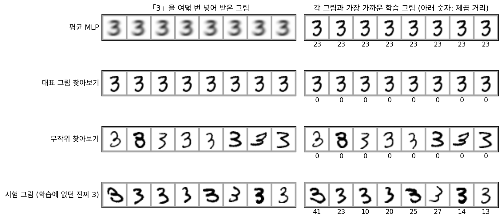

암기: 같은 입력에 같은 답이면 찾아보기 표다
생성은 무작위여야 한다는 데까지 왔다. 라벨을 넣은 MLP는 그렇지 않았다. 「3」을 몇 번 넣어도 같은 그림이 나온다. 이 MLP는 매개변수 204,304개짜리 신경망이지만, 입력이 라벨 열 가지뿐이니 평생 내놓을 수 있는 그림도 열 장뿐이다. 그 열 장을 표에 적어 두면 신경망을 지워도 같은 일을 한다. 같은 입력에 늘 같은 답을 내는 생성기는, 속이 무엇이든 입력의 가짓수만큼 줄이 있는 찾아보기 표와 같다. 데이터베이스에서 꺼내 주는 것과 다를 바가 없다.
그렇다면 무작위로 꺼내면 어떨까? 학습 그림이 이미 6,131장의 3을 갖고 있으니, 그 가운데 하나를 무작위로 골라 주면 그림은 진짜 3이고 부를 때마다 달라진다.
역사: 책을 뽑기의 재료로 쓴 섀넌
책 한 권을 데이터베이스 삼아 무작위로 글을 지은 사람이 있다. 섀넌(Claude Shannon)은 1948년 통신 이론 논문에서 영어처럼 보이는 가짜 글을 단계별로 지어 보였다. 앞 단어에 따라 다음 단어가 나오는 비율의 표를 만드는 대신, 그는 책을 썼다. 아무 쪽이나 펴서 단어 하나를 적고, 다른 쪽을 펴서 그 단어가 나올 때까지 읽다가 바로 뒤 단어를 적는 일을 되풀이했다. 책을 그대로 옮겨 적으면 이미 있는 글이 될 뿐이지만, 쪽을 무작위로 넘기며 이어 붙이자 「THE HEAD AND IN FRONTAL ATTACK ON AN ENGLISH WRITER THAT THE CHARACTER OF THIS POINT IS …」처럼 그 책에 그대로 실려 있을 리 없는 글이 나왔다. 무작위를 어디에 쓰느냐가 베끼기와 짓기를 갈랐다.
찾아보기 생성기 넷
학습 그림을 그대로 써서 만들 수 있는 가장 단순한 생성기 둘을 평균 MLP 옆에 세워 보자. 가장 단순한 것을 고르는 까닭은, 학습 그림을 꺼내 주기만 하는 생성기가 어떤 점수를 받는지 알아야 다른 생성기의 점수를 읽을 수 있어서다. 「대표 그림 찾아보기」는 「3」을 받으면 학습 3 가운데 평균 그림에 가장 가까운 한 장을 늘 돌려준다. 「무작위 찾아보기」는 학습 3 6,131장 가운데 한 장을 무작위로 골라 돌려준다. 기준으로는 학습에 쓰지 않은 시험 그림의 3, 곧 실제로 새로 쓰인 3을 함께 놓는다.
「3」으로 100번씩 불러 세 가지를 잰다. 서로 다른 그림이 몇 장 나왔나(다양성), 그림이 얼마나 3답게 선명한가(회색 칸 비율. 시험 그림은 6%대), 그리고 학습 그림을 얼마나 벗어났나(새로움)다. 새로움은 내놓은 그림과 가장 가까운 학습 그림 사이의 거리로 잰다.
| 생성기 | 100번 불러 나온 서로 다른 그림 | 새로움 (100번 평균) | 회색 칸 |
|---|---|---|---|
| 평균 MLP | 1 | 22.8 | 27.0% |
| 대표 그림 찾아보기 | 1 | 0 | 7.1% |
| 무작위 찾아보기 | 99 | 0 | 6.7% |
| 시험 그림의 3 (기준) | 100 | 24.3 | 6.4% |

무작위 찾아보기는 다양하고 선명하다. 그러나 새로움이 0이다. 내놓는 그림 하나하나가 학습 그림 그대로다. 실제로 새로 쓰인 3은 그렇지 않다. 시험 그림의 3 1,010장은 가장 가까운 학습 그림에서도 평균 24.2, 가장 가까운 것도 9.2 떨어져 있고, 시험 그림 10,000장 가운데 학습 그림과 똑같은 것은 한 장도 없다. 평균 MLP는 거꾸로 새로움이 22.8로 기준과 비슷한데, 회색 칸이 네 배다. 새로움 하나만 보면 흐린 평균 그림도 새 그림으로 통과한다.
이렇게 생성기가 학습 그림을 그대로, 또는 거의 그대로 다시 내놓는 것을 암기 (학습 그림을 그대로 꺼내 주기 / memorization)라 한다. 대표 그림 찾아보기와 무작위 찾아보기는 암기만 하는 생성기다. 늘 같은 것을 꺼내든 무작위로 꺼내든, 학습 데이터를 꺼내 주는 데 머물면 데이터베이스다. 우리가 바라는 생성기는 표의 맨 아래 줄처럼 다양하고, 선명하고, 새로워야 한다.
ML에서: 디퓨전 모델에서 학습 그림 꺼내기
큰 그림 생성 모델도 암기를 한다. 칼리니(Nicholas Carlini)와 동료들은 2023년, 글을 받아 그림을 그리는 Stable Diffusion v1.4 의 학습 데이터에서 가장 많이 겹쳐 실린 그림 35만 장의 설명 글을 골라, 글마다 500장씩 모두 1억 7,500만 장을 그렸다. 같은 글로 그린 500장 가운데 서로 거의 같은 그림이 여럿 나오면 암기를 의심했고, 학습 그림과의 거리로 확인해 94장이 학습 그림을 거의 그대로 되살린 것임을 보였다(눈으로 더 찾은 13장을 더하면 109장). 같은 글에 같은 그림이 거듭 나온다는 것, 곧 다양성이 무너진 자리가 암기의 단서였다.
문제 7. 점심 메뉴 추천 앱
학교 식당 메뉴판에 메뉴가 30개 있다. 앱 A는 기분(좋음, 보통, 피곤, 우울, 신남) 가운데 하나를 받아 정해진 규칙대로 메뉴 하나를 추천한다. 앱 B는 기분과 상관없이 메뉴판에서 하나를 무작위로 고른다. (가) 앱 A가 평생 추천할 수 있는 메뉴는 많아야 몇 가지인가? (나) 앱 B를 30일 동안 하루 한 번 쓰면 서로 다른 메뉴를 평균 몇 가지 받는가? (다) 두 앱 가운데 메뉴판에 없는 새 메뉴를 추천할 수 있는 것은?

(가)는 규칙이 아무리 복잡해도 기분 다섯 가지에 답이 하나씩이니까 다섯 가지요.

그럼 앱 A는 다섯 줄짜리 표와 무엇이 달라요?

다를 게 없네요. 다섯 줄만 적어 두면 앱을 지워도 돼요.

(나)는 메뉴 하나가 30일 동안 한 번도 안 나올 확률이 (29/30)³⁰ = 0.36이니까, 30 × (1 − 0.36) = 19.2가지야.

30번 썼는데 19가지밖에 안 돼요? 겹치는 날이 그렇게 많아요?
30개에서 30번 뽑아 하나도 안 겹칠 확률은 1조 분의 1쯤이야. 겹치는 게 보통이지.

(다)는요?
둘 다 못 해요. B는 날마다 다르긴 한데 메뉴판 안에서만 골라요.

A는 표고, B는 표를 무작위로 펴 보는 거구나. 무작위로 고른다고 새것이 생기지는 않네.
조교님이 조 편성을 매번 무작위로 해도, 결국 우리 반 사람끼리만 섞이는 거랑 같네요.
문제 8. 무작위 찾아보기를 100번 부르면
무작위 찾아보기는 학습 그림의 3 6,131장 가운데 한 장을 고르게 뽑는다. (가) 100번 부를 때 같은 그림이 두 번 이상 나올 확률은? (나) 100번 불러 나오는 서로 다른 그림 수의 기댓값은? (다) 몇 번 부르면 겹칠 확률이 반을 넘는가? (라) 서로 다른 그림이 99장 나왔다면, 이 생성기가 새 그림을 99장 만든 것인가?
6,131장에서 100번이면 겹칠 일은 거의 없겠죠. 1~2%쯤?
겹치지 않을 확률을 곱으로 적어 봐요.
첫 번은 아무거나, 둘째는 6,130/6,131, 셋째는 6,129/6,131, … 백째까지 곱하면 0.444야. 겹칠 확률은 0.556이고.

절반이 넘어요? 아, 생일 문제네요. 몇십 명만 모여도 생일이 겹치는 사람이 나오는 거요.
(나)와 (다)는요?
그림 하나가 100번 동안 한 번도 안 나올 확률이 (1 − 1/6,131)¹⁰⁰이니까 6,131 × (1 − 그 값) = 99.2장이요. (다)는 돌려 보니 92번에서 0.497, 93번에서 0.504라 93번이에요.
(라)는요?

아니에요. 99장이 다 달라도 하나하나는 학습 그림이에요. 서로 다르다는 건 생성기가 내놓은 그림끼리 견준 것이고, 새롭다는 건 학습 그림과 견준 거라 잣대가 달라요.

그래서 다양성과 새로움을 따로 재야 하는군요. 하나가 좋아도 다른 하나는 0일 수 있으니까.
부분집합은 원소가 아무리 많아도 원래 집합 밖의 원소는 하나도 없는 거랑 같아.
문제 9. 두 3을 반반 섞으면
무작위 찾아보기를 고쳐, 학습 그림의 3을 두 장 무작위로 골라 칸마다 평균 낸 그림을 내놓게 했다. 100번 부르면 서로 다른 그림이 100장이고, 새로움(가장 가까운 학습 그림까지의 제곱 거리)의 평균은 23.4로 시험 그림 3의 24.3과 비슷하다. (가) 이 생성기는 암기를 벗어났는가? (나) 회색 칸(밝기 0.2~0.8) 비율이 시험 그림 3은 6.4%, 이 생성기는 18.8%다. 무엇을 뜻하는가? (다) 다양하고, 선명하고, 새로우려면 무작위는 무엇을 고르는 데 쓰여야 할까?

됐네요! 다양하고 새로워요. 학습 그림이 아니니까 암기도 아니고요.
평균 MLP의 새로움은 얼마였죠?
22.8이요. 그것도 시험 그림이랑 비슷했어요. 그런데 흐렸죠.
(나)가 그 얘기야. 회색 칸이 세 배야. 획이 다른 자리에 있는 두 3을 겹치니 획이 두 겹으로 번져. 평균 MLP가 6,131장을 섞었다면 이건 두 장을 섞은 거고.
이 생성기에서 무작위는 무엇을 골랐어요?
어느 학습 그림 두 장을 꺼낼지만요. 그림의 생김새는 꺼낸 그림을 섞는 정해진 규칙이 정했어요.

그러니까 무작위가 「어느 학습 그림을 꺼낼까」를 고르면 데이터베이스나 그걸 섞은 것밖에 안 되고, 획의 자리나 기울기나 굵기 같은 생김새 자체를 골라야 하는군요.
그 생김새를 고르는 무작위를 신경망 어디에 넣고, 그때 무엇을 정답으로 가르칠지가 남은 물음이에요.
과제 두 개를 반씩 베껴 붙이면 표절 검사는 피해도 글이 앞뒤가 안 맞는 거랑 같네요.